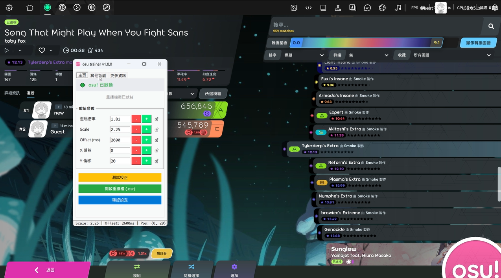

採用最新的虛擬輸入技術與模擬系統，呈現完美的重播
專為追求高 PP 的玩家打造
打破限制，自訂遊玩倍率，實現不一樣的獨特風格，輕鬆刷出理想 PP
搭載先進演算法，開啟後可以消除所有生硬跳躍，讓遊玩軌跡更加順暢
完整相容 osu! Stable 與 Lazer 版本
為了規避檢測系統，請遵循建議流程，配合以下編輯器進行後製處理。
本工具的核心推薦編輯器。優點是方便修改滑鼠軌跡，且具備進階功能，是確保數據自然的必要工具。
優點是容易修改鍵盤點擊軌跡。
⚠️ 注意：若由此導出，必須先丟回 V3 再次導出，機器人方可讀取。
在斷網或離線模式下遊玩，並自行按 F2 保存原始重播。
確保遊戲已完全關閉，再開始進行後製工作。
使用上述工具進行數據後製，針對滑鼠與按鍵點位進行自然化修正。
確保數據無誤且符合人類水平後，再提交成績。
透過簡單的調整，獲取高額的PP

點擊下方按鈕獲取最新版本，見證排名的飛速成長。
下載最新版